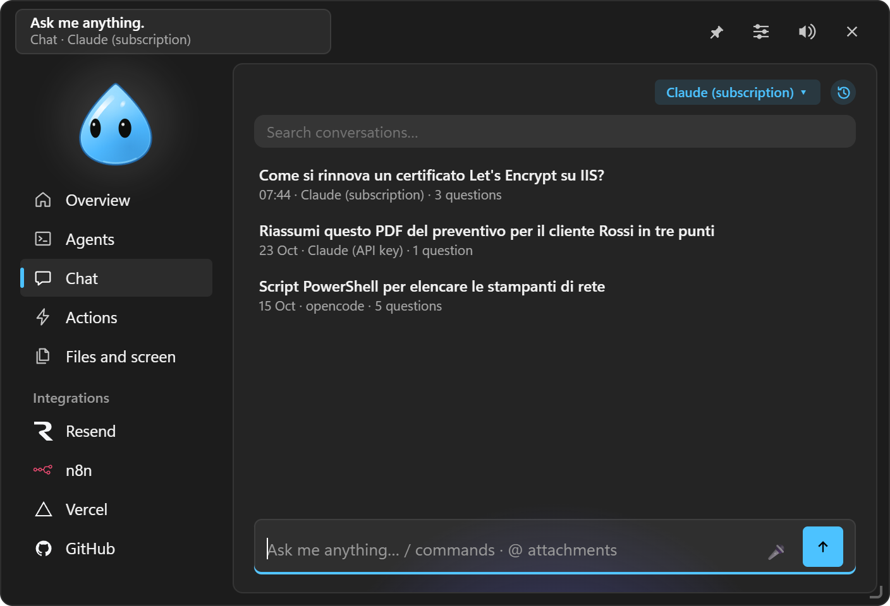

The chat
Writing, attaching, / and @ commands, assistants, dictation, history, second opinion.

#Writing
- The field is multi-line: Enter sends, Shift+Enter adds a line. What you're writing survives a restart. ↑ in an empty field brings back the last question.
- Answers are in markdown: headings, lists, tables, code with Copy. While the engine works you see its reasoning and the tools it uses.
- ■ Stop interrupts the answer in progress (and the pending permission).
- If you scroll up to read, incoming text doesn't pull you down: ↓ goes back to the bottom.
- Calculator: type
840 + 22%or15% of 840and the result appears right away, computed locally. Enter copies it, Ctrl+Enter asks the chat anyway.
#Under each message
- Copy.
- Edit (on your questions): the text goes back to the field and the conversation restarts from there.
- ↻ Regenerate (on the last answer).
- ⑂ Branch from here: a new conversation starting from that point; the previous one stays whole in the history.
- ⇄ Second opinion: another engine rereads the last question and answer and points out mistakes, gaps or risks (or "looks good"). Its review also reaches the main engine, which can correct itself.
#Attaching
| How | What |
|---|---|
| Ctrl+Alt+K | The copied text or image |
| Ctrl+V in the field | Images and files copied in File Explorer (📎 chip) |
| Dragging a file onto the island | Attached to the current conversation, without restarting it |
@appunti | The copied text or image |
@finestra | A picture of an open window |
@vassoio | A file from the Tray |
| Dragging the chat character onto a window | That window as context (image, app name, title). Esc cancels |
| Box and ask | An area of the screen (see Files and screen) |
| Ask the chat in Clipboard, Tray, Notion | The chosen item |
Images go to models that can read them, text files into the message, PDFs to Claude.
#/ commands
Type / and pick from the menu (arrows, Tab or Enter):
| Command | What it does |
|---|---|
/nuova | New conversation |
/cronologia, /cerca | Past conversations, also by words |
/ricorda … | Saves a note to memory without going through the model |
/memoria | Opens the memory |
/esporta | The conversation as Markdown in the Tray |
/motore | Changes engine for this conversation |
/oggi, /domani | The day: tasks, appointments, tickets |
/compito … | Hands a goal to a task |
/<action> | Runs a quick action by name (e.g. /daily-backup) |
/<skill> | Uses a skill |
/<assistant> | New conversation with an assistant |
A /something that is not a command goes to the engine as text. (Command names are in Italian in both languages.)
Templates with fields: a quick action of type "Ask the chat" with {{client}} in the text, picked from /, lands in the field instead of being sent; Tab jumps from one field to the next.
#Assistants
In Settings → Chat and AI engines → Instructions and memory you create assistants with name, emoji, engine and instructions (for example "SQL reviewer" or "Technical translator"). In the chat you call them with /name: a new conversation starts on their engine, with the 🤖 chip.
#Instructions
Settings → Chat and AI engines → Instructions: a text told to the chat at the start of every conversation ("Answer briefly. I'm a technician, my clients are small offices…"). It belongs to the profile, so each profile can have its own.
#Dictation
🎤 in the field: click to start and to finish. With a transcription service chosen in Settings → Telegram → Voice messages, it records and transcribes with it; without one, it opens Windows dictation (Win+H), local and free.
#History
The clock at the top of the chat shows previous conversations (up to 100, only on this PC), with date, engine and search. A click reopens one on its engine and you continue it. With API engines it resumes exactly where it was; with the subscription and opencode the conversation is passed along as text. Settings → Chat → History clears or turns it off (turning off the memory diary too).

#Asking from elsewhere
- From the field at the top of the island with Ctrl+Enter.
- From Telegram, with its own conversation (see Telegram);
/riprendicontinues there the island's last conversation. - From an "Ask the chat" quick action or the Win+Alt+A menu on the selected text.